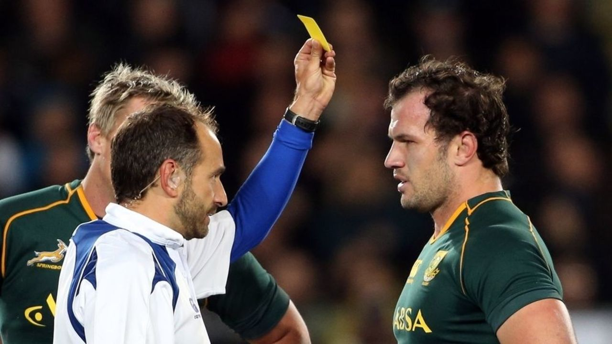
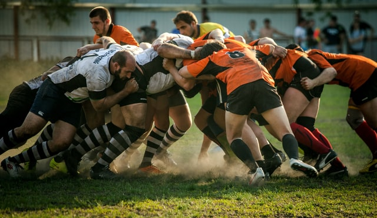

El «Documento del Juego» ha sido incluido a partir de la versión 2007 del reglamento y es complementario a las Leyes del Juego. Está orientado a consolidar los aspectos éticos del deporte y en especial el juego limpio.
Está dividido en cuatro capítulos: Introducción, Principios del juego, Principios de las leyes, Conclusión. El documento establece que los principios del juego son:
-Conducta: destaca la importancia del control y la disciplina, tanto individual como colectiva, dando un ejemplo: "es perfectamente aceptable la acción de ejercer extrema presión física sobre un oponente en un intento de obtener la posesión de la pelota, pero no para lastimar voluntaria o maliciosamente".
-Espíritu: el juego debe practicarse ateniéndose no solo a la letra de las reglas, sino a su espíritu.
-Objeto: "El Objeto del Juego es que dos equipos de quince jugadores cada uno, practicando un juego leal de acuerdo a las Leyes y al espíritu deportivo, portando, pasando, pateando, y apoyando la pelota, marquen la mayor cantidad de puntos posible".
-Disputa y continuidad: "La disputa por la posesión de la pelota es una de las características claves... La ventaja entonces, debe residir siempre en el equipo que introduzca la pelota,..." El objetivo es "mantener la continuidad negándole la pelota a la oposición... Las fallas al hacer esto significarán la renuncia a la posesión...'
El Documento establece también los Principios de las Leyes: Un deporte para todos. Mantenimiento de la identidad: mantener las características distintivas del juego, "mediante melés, touchs, mauls, rucks, kick-offs (o tiro afuera) y kicks de reinicio" y las "relacionadas con la disputa y la continuidad: el pase atrás y el placaje o tackle ofensivo". Diversión y entretenimiento: tanto para los que juegan como para los que lo ven. Aplicación: "cumplir las Leyes y respetar los principios del juego limpio".
En la Conclusión, el «Documento del Juego» establece que "es por causa y no a pesar, de las intensas características físicas y atléticas del Rugby, que esa gran camaradería existe antes y después de los partidos. La perdurable tradición de jugadores de equipos contrarios disfrutando la mutua compañía lejos del campo de juego y en un contexto social permanece en la esencia del juego. El Rugby se ha metido de lleno en la era profesional pero ha mantenido el espíritu y las tradiciones del juego recreativo".